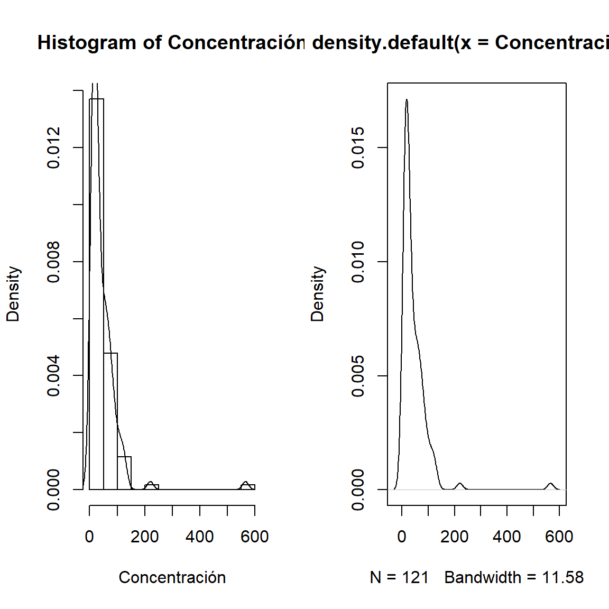

R es un lenguaje y un entorno para la computación estadística y los gráficos.
Es un proyecto GNU que es similar al lenguaje y entorno S que fue desarrollado en Bell Laboratories (antes AT&T, ahora Lucent Technologies) por John Chambers y sus colegas.
R proporciona una amplia variedad de técnicas estadísticas (modelos lineales y no lineales, pruebas estadísticas clásicas, análisis de series temporales, clasificación, agrupación,…) y técnicas gráficas, y es altamente extensible.
Entorno en el que se implementan técnicas estadísticas.
La concentración media de partículas en microgramos por metro cúbico para una estación de un complejo petroquímico se midió cada 6 horas durante 30 días. Los datos resultantes se presentan en forma de tabla. Una nueva regulación de la contaminación atmosférica requiere que la concentración total de partículas se mantenga por debajo de 75 \(mg\quad m^{3}\). (Tomado del libro Design of Experiments in Chemical Engineering).
Con base a los datos, realizar una caracterización completa del conjunto de datos. 1. Lectura en R de los datos.
Concentración=scan(text='
5 7 9 12 13 16 17 19 23 24 41
18 24 6 10 16 14 23 19 8 20 26
15 6 11 16 12 22 9 8 15 18 13
7 13 14 8 17 19 11 21 9 55 72
23 24 12 220 25 13 8 9 20 61 48
565 65 10 43 20 45 27 20 72 12 115
130 82 55 26 52 34 66 112 40 34 89
85 95 28 110 16 19 61 67 45 34 32
103 72 67 30 21 122 42 125 50 57 56
25 15 46 30 35 40 16 53 65 78 98
80 65 84 91 71 78 58 26 48 21 25
')
class(Concentración)## [1] "numeric"## num [1:121] 5 7 9 12 13 16 17 19 23 24 ...Cumplen_Si=Concentración[Concentración<75]
Cumplen_No=Concentración[Concentración>=75]
summary(Cumplen_Si)## Min. 1st Qu. Median Mean 3rd Qu. Max.
## 5.00 14.00 22.50 29.03 42.75 72.00## Min. 1st Qu. Median Mean 3rd Qu. Max.
## 78.0 84.5 98.0 129.6 118.5 565.0Cumplimiento=0
for (i in 1:length(Concentración)){
if (Concentración[i]<75) Cumplimiento[i]=="Si"
else Cumplimiento[i]=="No"}
Cumplimiento## [1] 0## [1] 1 1 1 1 1 1 1 1 1 1 1 1 1 1 1 1 1 1 1 1 1 1 1 1 1 1 1 1 1 1 1 1 1 1 1
## [36] 1 1 1 1 1 1 1 1 1 1 1 1 0 1 1 1 1 1 1 1 0 1 1 1 1 1 1 1 1 1 0 0 0 1 1
## [71] 1 1 1 0 1 1 0 0 0 1 0 1 1 1 1 1 1 1 0 1 1 1 1 0 1 0 1 1 1 1 1 1 1 1 1
## [106] 1 1 1 0 0 0 1 0 0 1 0 1 1 1 1 1## Warning in dotchart(table(Cumplimiento_2)): 'x' is neither a vector nor a
## matrix: using as.numeric(x)par(mfrow=c(1,2))
hist(Concentración,prob=TRUE)
lines(density(Concentración))
plot(density(Concentración))
##
## The decimal point is 2 digit(s) to the right of the |
##
## 0 | 11111111111111111111111111122222222222222222222222222222233333333333
## 0 | 555555556666666777777777788888999
## 1 | 000112233
## 1 |
## 2 | 2
## 2 |
## 3 |
## 3 |
## 4 |
## 4 |
## 5 |
## 5 | 7## [1] 50.90909##
## (5,55.9] (55.9,107] (107,158] (158,209] (209,260] (260,310]
## 86 26 6 0 1 0
## (310,361] (361,412] (412,463] (463,514] (514,565]
## 0 0 0 0 1##
## (5,55.9] (55.9,107] (107,158] (158,209] (209,260] (260,310]
## 0.710743802 0.214876033 0.049586777 0.000000000 0.008264463 0.000000000
## (310,361] (361,412] (412,463] (463,514] (514,565]
## 0.000000000 0.000000000 0.000000000 0.000000000 0.008264463## (5,55.9] (55.9,107] (107,158] (158,209] (209,260] (260,310]
## 86 112 118 118 119 119
## (310,361] (361,412] (412,463] (463,514] (514,565]
## 119 119 119 119 120## (5,55.9] (55.9,107] (107,158] (158,209] (209,260] (260,310]
## 0.7107438 0.9256198 0.9752066 0.9752066 0.9834711 0.9834711
## (310,361] (361,412] (412,463] (463,514] (514,565]
## 0.9834711 0.9834711 0.9834711 0.9834711 0.9917355se estudia el rendimiento de un proceso químico con base en la observación de 50 días. Los datos se muestran a continuación. (Tomado de Notas de Clases: Carlos Barrera, 2019)
Rendimiento=c(90.85,89.37,90.08,89.77,92.10,90.34,91.46,91.54,90.96,92.02,
89.78,90.22,88.15,91.05,93.22,88.74,88.40,90.06,90.59,90.14,89.42,
90.18,90.28,91.40,89.02,90.14,92.46,91.36,92.81,90.14,
90.28,89.17,89.98,91.94,91.57,91.77,89.59,91.53,89.68,91.39,92.82,
90.93,89.27,88.59,89.40,91.53,91.13,90.67,90.20,90.39)Caracterizar los datos a partir de medidas de resumen y gráficos.
Una empresa dedicada a la fabricación de hierro fundido ha empleado un sistema de materias primas y procedimientos de procesamiento que ha producido un producto cuyo contenido medio de silicio en la población general era del 0,85%. Entró en vigor un nuevo contrato en el que un nuevo proveedor de materia prima sustituyó al anterior. Durante el primer mes de funcionamiento utilizando el nuevo material, se encontraron muestras aleatorias del contenido de silicio del producto:
1.13; 0.80; 0.85; 0.60; 0.97; 0.92; 0.94; 0.72; 1.17; 0.87; 0.36; 0.68; 0.73; 0.82; 0.79; 0.87; 0.92; 0.81; 0.97; 0.48; 1.00; 0.92; 0.61; 0.81; 0.71; 0.97; 0.89; 0.68; 1.00; 1.16. Observación las medidas dadas están en porcentajes, es decir, 1.13 es equivalente a 1.13%.Caracterizar los datos y establezca si la medida adoptada fue óptima o no.